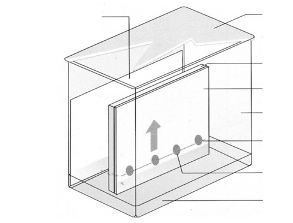
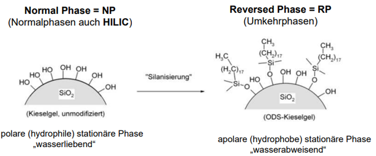
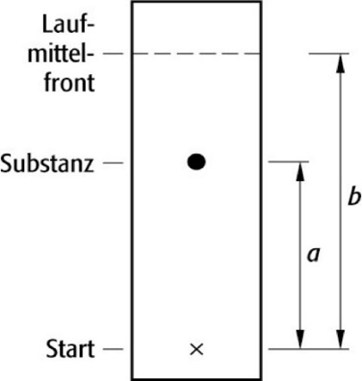
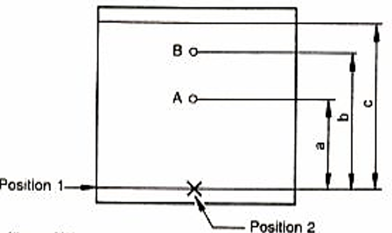
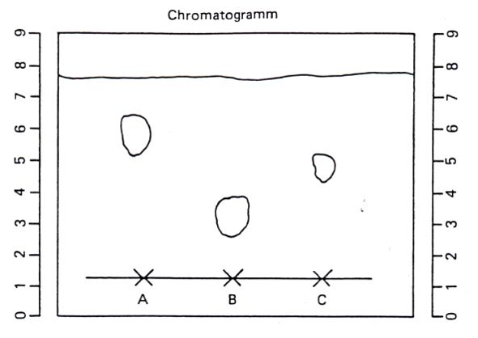
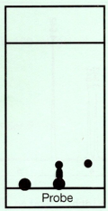
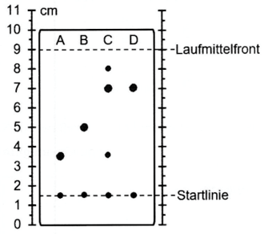

Worum geht es bei der Dünnschichtchromatographie?
Die Dünnschichtchromatographie, kurz DC, heißt auf Englisch TLC = thin layer chromatography. Sie ist ein physikalisch-chemisches Trennverfahren und wird zur Untersuchung der Zusammensetzung von Proben genutzt.
Einsatzgebiete
Besonders im präparativ-organischen Bereich nutzt man die DC, weil sie schnell, unkompliziert und materialsparend ist.
- schnelle Verlaufskontrolle bei der Synthese
- Reinheitskontrolle von Edukten, Zwischenprodukten oder Produkten
- Vergleich einer Probe mit Referenzsubstanzen
Warum ist DC praktisch?
Man braucht nur wenig Probe, wenig Laufmittel und einfache Geräte. Mehrere Proben können gleichzeitig auf derselben Platte laufen.
Die Methode ist deshalb gut für schnelle Entscheidungen im Labor: Ist noch Edukt vorhanden? Ist ein Produkt entstanden? Gibt es auffällige Verunreinigungen?
Wo sind Grenzen?
DC ist meist eher qualitativ als quantitativ. Bei sehr komplexen Gemischen reicht die Trennleistung oft nicht aus. Außerdem sind Rf-Werte empfindlich gegenüber Bedingungen wie Laufmittel, Temperatur, Kammersättigung und Plattenzustand.
Vor- und Nachteile zuordnen
Klicke eine Aussage an und ordne sie dann „Vorteil“ oder „Nachteil“ zu. Du kannst falsch abgelegte Karten erneut anklicken und umsortieren.
Vorteile
Nachteile
Aus welchen Teilen besteht eine DC?
Die wichtigsten Begriffe sind mobile Phase, stationäre Phase und Analyt. Zusätzlich bestimmen Entwicklungskammer, Trägerplatte, Startlinie und Laufmittelhöhe die Qualität der Trennung.
Stationäre Phase
Die ruhende Trennschicht auf der Platte. Sie besteht aus einem feinkörnigen Material, zum Beispiel Kieselgel, Aluminiumoxid oder Cellulose.
Meist wird Kieselgel verwendet. Seine OH-Gruppen machen die Oberfläche polar. Das ist typisch für die Normalphasen-DC.
Mobile Phase
Die bewegte Phase. Bei der DC ist das eine Flüssigkeit oder ein Flüssigkeitsgemisch. Man nennt sie Fließmittel, Laufmittel oder Elutionsmittel.
Wichtig sind die eluotrope Reihe, Polarität und Mischbarkeit der verwendeten Lösemittel.
Analyt
Der zu untersuchende Stoff oder die Stoffmischung. Die Analyt-Teilchen wechselwirken unterschiedlich stark mit stationärer und mobiler Phase.
Diese unterschiedlichen Wechselwirkungen erzeugen die Trennung.
Wichtige Fakten zur Entwicklungskammer
- Die Entwicklungskammer ist häufig mit Filterpapier ausgekleidet.
- Grund dafür ist die Kammersättigung: Die Dämpfe des Fließmittels verteilen sich gleichmäßig in der Kammer.
- Dadurch werden Verdunstungseffekte verringert. Die Ergebnisse werden reproduzierbarer und die Laufmittelfront wird gleichmäßiger.
- Die Fließmittelhöhe beträgt ungefähr 5 bis 10 mm.
Bildbeschriftung richtig zuordnen
Klicke zuerst eine Begriffskarte an und danach die passende Position. Falsch gesetzte Begriffe kannst du durch erneutes Anklicken einer Position ersetzen.

Für die Übung sind die Positionen von oben nach unten gedacht: erst die obere linke Beschriftung, dann die rechte Seite von oben nach unten, zuletzt die unteren Beschriftungen.
Warum wandern Stoffe unterschiedlich weit?
Jeder Stoff verteilt sich zwischen stationärer und mobiler Phase. Wer stärker an der stationären Phase haftet, bleibt länger zurück und hat einen kleineren Rf-Wert.
Normalphasen-DC
Bei einer polaren stationären Phase wie Kieselgel werden polare Stoffe stärker festgehalten. Weniger polare Stoffe wandern weiter.
Merksatz: Polar hält polar fest. Auf Kieselgel läuft unpolar meistens weiter.
Umkehrphasen-DC
Bei RP-18 ist die Oberfläche unpolar. Dadurch kehrt sich die typische Reihenfolge oft um: polarere Stoffe werden weniger stark festgehalten.
Normalphase und Reversed Phase im Vergleich

Links ist unmodifiziertes Kieselgel mit polaren OH-Gruppen dargestellt. Rechts ist die Oberfläche silanisiert, zum Beispiel mit langen Alkylketten. Dadurch wird die stationäre Phase apolar und hydrophob.
Wechselwirkungen fachlich genauer
Bei Kieselgel spielen Adsorption, Dipol-Dipol-Wechselwirkungen und Wasserstoffbrücken eine wichtige Rolle. Je größer die Oberfläche der stationären Phase ist, desto mehr Kontaktstellen gibt es zwischen Analyt und Trennschicht.
Kleine Partikel und eine enge Korngrößenverteilung verbessern die Trennleistung, weil die Laufwege gleichmäßiger und die Austauschprozesse häufiger werden.
Entscheiden
Auf Kieselgel laufen drei Stoffe. C ist am weitesten gewandert, A am wenigsten. Wer ist vermutlich am polarsten?
Wie führt man eine DC sauber durch?
Der Ablauf ist immer ähnlich. Wichtig sind kleine Startzonen, eine geschlossene Kammer und das sofortige Markieren der Laufmittelfront.
Ablauf als Laborfolge
Laufmittel einfüllen, Filterpapier einsetzen und Kammer sättigen.
Nur mit Bleistift, ggf. gestrichelt, etwas über dem späteren Laufmittelspiegel.
Kleine Startzone: höchstens etwa 3 mm, typisch 1 bis 3 µL.
Kammer geschlossen halten. Das Laufmittel steigt nach oben.
Sofort nach dem Herausnehmen markieren, dann trocknen und detektieren.
Gute Startzone
- Durchmesser höchstens etwa 3 mm
- typisch 1 bis 3 µL Lösung
- Abstand zum Rand und zu anderen Punkten etwa 1,5 cm
- Vergleichsproben und Analysenproben sinnvoll nebeneinander auftragen
- Startlinie oberhalb der Laufmitteloberfläche
Worauf du achten musst
- Startflecken vor dem Entwickeln trocknen lassen
- Kammer während der Entwicklung nicht öffnen
- typische Trennstrecke: etwa 6 bis 16 cm
- Laufmittelfront direkt nach dem Herausnehmen markieren
- erst nach dem Trocknen detektieren und auswerten
Ablauf sortieren
Klicke die Arbeitsschritte in sinnvoller Reihenfolge an.
Wie beeinflusst das Laufmittel die Trennung?
Die Elutionskraft beschreibt, wie gut ein Laufmittel Analyten von der stationären Phase verdrängt. Bei Kieselgel erhöhen polarere Laufmittel oft die Rf-Werte polarer Stoffe.
Drei Regeln
- Je polarer das Laufmittel, desto weiter wandern polare Substanzen.
- Bei polarer stationärer Phase wandert die weniger polare Substanz schneller.
- Ein starkes Laufmittel verdrängt Analyten gut von der stationären Phase.
Außerdem müssen die Lösemittel mischbar sein, wenn ein Laufmittelgemisch eingesetzt wird. Bei Gemischen wie Hexan : Essigsäureethylester verändert der Anteil des polareren Bestandteils die Elutionskraft.
Mini-Simulation
Laufmittel anpassen
Auf Kieselgel bleiben zwei polare Substanzen fast am Start und trennen sich schlecht. Was ist der sinnvollste erste Versuch?
Polaritär ordnen
Welche Reihenfolge ist von unpolar nach polar richtig?
Wie berechnet man den Rf-Wert?
Der Rf-Wert ist ein Verhältnis. Er vergleicht die Laufstrecke eines Flecks mit der Laufstrecke der Laufmittelfront.
Formel
Rf = Laufstrecke der Substanz / Laufstrecke der Laufmittelfront
Beispiel: Substanz 4,8 cm, Laufmittelfront 7,5 cm. Dann gilt: 4,8 / 7,5 = 0,64.
Rf-Werte liegen zwischen 0 und 1. Je größer der Wert, desto weiter ist der Stoff gewandert.
Strecken im Chromatogramm

Im Schema ist a die Laufstrecke der Substanz. b ist die Laufstrecke der Laufmittelfront. Damit gilt: Rf = a / b.
Rf-Rechner
Rechnen
Ein Fleck läuft 3,2 cm. Die Laufmittelfront läuft 8,0 cm. Welcher Rf-Wert ist richtig?
Wie macht man farblose Stoffe sichtbar?
Nicht alle Stoffe sind von selbst farbig. Deshalb braucht man UV-Licht oder Nachweisreagenzien.
Detektionsarten
- Eigenfarbe oder Form des Flecks
- UV-Licht bei Platten mit Fluoreszenzindikator F254
- Begasen, Besprühen oder Tauchen mit Nachweisreagenzien
Reagenz auswählen
Nachweis wählen
Welches Reagenz ist typisch für Aminosäuren?
Wie deutet man ein Chromatogramm?
Man vergleicht Fleckenhöhe, Anzahl der Flecken und Referenzspuren. Gleiche Höhe bedeutet unter gleichen Bedingungen: wahrscheinlich gleiche Substanz.
Spuren lesen
- A und B sind Edukte.
- C ist das Reaktionsgemisch.
- D ist die Produktreferenz.
- Flecken in C auf Höhe von A/B bedeuten: Edukte sind noch vorhanden.
- Ein Fleck in C auf Höhe von D bedeutet: Produkt ist entstanden.
Fall beurteilen
Was zeigt das Chromatogramm?
Welche Fehlerbilder gibt es?
Schlechte Chromatogramme haben oft erkennbare Ursachen. Wer das Fehlerbild benennt, kann die nächste DC gezielt verbessern.
Fehlerdiagnose-Fallkarten
Wähle eine Fallkarte aus. Bestimme dann Ursache und passende Verbesserung.
Wähle links eine Fallkarte.
Diagnose-Tabelle als Hilfe anzeigen
| Beobachtung | Mögliche Ursache | Verbesserung |
|---|---|---|
| Tailing | zu hohe Substanzmenge oder falsche Elutionskraft | weniger auftragen, Laufmittel anpassen |
| schräge Front | Platte stand nicht gerade | Platte senkrecht einsetzen |
| unregelmäßige Front | keine Kammersättigung oder Temperaturunterschiede | Kammer sättigen, Bedingungen konstant halten |
| Probe am Start verschmiert | Startlinie im Laufmittel, Startzone zu groß oder nass | höher starten, trocknen lassen, kleiner auftragen |
Was unterscheidet HPTLC von konventioneller DC?
HPTLC bedeutet Hochleistungsdünnschichtchromatographie. Das Verfahren ist enger kontrolliert, leistungsfähiger und oft stärker automatisiert als die klassische DC.
Schicht und Trennleistung
- homogenere und dünnere Schichtdicke
- kleinere Korngröße
- sehr enge Korngrößenverteilung
- hohe Packungsdichte
- dadurch hohe Trennleistung und geringere Trennstrecke
Kammer und Laufmittel
- häufig HPTLC-Kammer mit horizontaler Entwicklung
- geringere Laufmittelmenge nötig
- definiertere Bedingungen verbessern die Reproduzierbarkeit
Aufwand und Auftragung
- aufwändigere Produktion der Platten
- dadurch teurer als konventionelle DC
- meist automatisierte Auftragung
- meist bandenförmiges Aufsprühen
- geringere Auftragsmenge
Merksatz
HPTLC ist keine völlig andere Grundidee, sondern eine präzisere und leistungsfähigere Variante der DC.
HPTLC einordnen
Welche Aussage beschreibt HPTLC richtig?
Abschlussprüfung
Zum Schluss prüfst du, ob die wichtigsten Kompetenzen sitzen. Danach kannst du das Material ausdrucken oder einzelne Schritte wiederholen.
Kompetenz-Check
Merksätze
1. DC trennt Stoffe durch unterschiedliche Verteilung zwischen stationärer und mobiler Phase.
2. Auf Kieselgel werden polare Stoffe stärker zurückgehalten.
3. Der Rf-Wert ist ein Verhältniswert und nur bei gleichen Bedingungen sinnvoll vergleichbar.
4. Saubere Startzonen und konstante Bedingungen entscheiden über die Qualität.
Übungsaufgaben
Bearbeite die Aufgaben zuerst selbst. Öffne die Lösung erst danach zur Kontrolle.
Erkennung farbloser Substanzen
Nennen Sie zwei Möglichkeiten der Erkennung von farblosen Substanzen auf der DC-Platte.
Lösung anzeigen
Positionen, Strecken und Rf-Wert

a) Benennen Sie die Position 1 und 2 sowie die Strecken a, b und c.
b) Geben Sie exemplarisch den Rf-Wert der Substanz A an.
Lösung anzeigen
Polarität und Rf-Werte bestimmen

Auf einer DC-Platte mit polarer stationärer Phase werden drei Substanzen A, B und C chromatographiert. Als Laufmittel wird ein Gemisch aus Hexan und Essigsäureethylester verwendet.
a) Welcher der Stoffe A bis C ist der polarste?
b) Bestimmen Sie aus dem Chromatogramm die Rf-Werte der Substanzen.
Lösung anzeigen
Trennung verbessern und Begriffe erklären

Sie erhalten nach einer DC-Trennung auf einer Kieselgelplatte mit dem Fließmittelgemisch Hexan : Ethansäureethylester = 8 : 2 das dargestellte Chromatogramm.
a) Erklären Sie, wie das Fließmittelgemisch verändert werden muss, um eine bessere Trennung zu erreichen.
b) Erläutern Sie die Begriffe „inneres Chromatogramm“ und „äußeres Chromatogramm“.
c) Nennen Sie zwei Gründe, warum Rf-Werte oft schlecht reproduzierbar sind.
Lösung anzeigen
Reaktionsverlauf beurteilen

Mithilfe der DC soll der Verlauf einer chemischen Reaktion überwacht werden. A: Edukt A; B: Edukt B; C: Reaktionsgemisch bzw. Rohprodukt; D: Referenz des gekauften Produkts.
a) Erläutern Sie, ob die Reaktion zum Zeitpunkt der Probenahme bereits beendet war.
b) Beurteilen Sie die Reinheit des Rohprodukts.
c) Berechnen Sie den Rf-Wert des reinen Produkts.